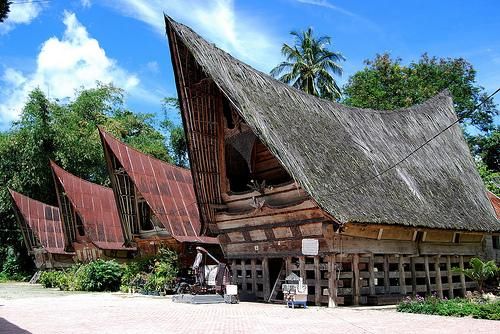
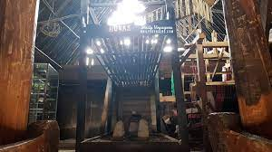

Rumah Bolon
 
Rumah Bolon dikenal juga dengan sebutan rumah Gorga. Memiliki atap yang bentuknya seperti pelana kuda dengan sudut yang sangat sempit sehingga cukup tinggi. Dindingnya pendek tapi cukup untuk berdiri karena rumah tidak dilengkapi dengan plafon. Dinding bagian atas dilengkapi dengan anyaman-anyaman yang mempercantik penampilan rumah. Di atas pintu depan terdapat gorga atau lukisan hewan, seperti cicak dan kerbau yang didominasi dengan warna merah, hitam, dan putih. Gambar cicak merupakan simbol bahwa masyarakat Batak adalah masyarakat yang memiliki rasa persaudaraan yang begitu kuat antar sesamanya, sedangkan gambar kerbau adalah simbol ucapan terimakasih.
Meskipun masing-masing rumah memiliki ciri khas, pada dasarnya Rumah Bolon memiliki bentuk yang hampir sama. Rumah ini berbentuk persegi panjang, layaknya rumah panggung, ada banyak tiang penyangga setinggi 1,75 meter. Karena tiang tersebut cukup tinggi, maka penghuni rumah atau tamu yang akan masuk harus menggunakan tangga yang jumlahnya selalu ganjil.
Rumah bolon biasanya dapat ditempati lima sampai enam keluarga. Di rumah ini kita bisa melihat ada banyak hiasan ukiran khas Batak, seperti ornamen yang biasanya dilambangkan sebagai tanda penolak bala (bahaya, penyakit, dan lainnya).
Ciri Khas Rumah Bolon
Desain Rumah
Rumah Bolon terdiri atas dua bangunan utama. Yang pertama disebut dengan ruma (bangunan tempat tinggal) dan yang kedua adalah sopo (lumbung padi). Rumah Bolon memiliki bentuk persegi empat dengan model bangunan seperti panggung dan jarak antara bangunan dengan tanah adalah 1,75 meter. Bangunannya cukup tinggi, sehingga diperlukan tangga agar penghuni rumah dan tamu dapat memasukinya dengan mudah. Lokasi tangga biasanya berada di bagian tengah rumah.
Pondasi
Rumah adat Batak menggunakan fondasi tipe cincin, yaitu tipe yang menjadikan batu sebagai tumpuan kolom kayu yang ada di atasnya. Batu yang digunakan di bagian dasarnya disebut dengan batu ojahan. Nantinya, di atas batu ojahan dengan struktur fleksibel diletakan tiang dengan diameter 42 cm – 50 cm. Desain ini membantu rumah agar tahan terhadap gempa. Selain itu, terdapat 18 tiang rumah yang memiliki filosofi kebersamaan dan kekuatan.
Atap
Atap rumah adat Batak terbuat dari ijuk atau daun rumbia, bahan alami yang mudah ditemukan di Sumatera. Bagian atap memiliki desain seperti pelana kuda atau punggung kerbau. Desain atap seperti ini akan membantu dalam menghalau terpaan angin kencang. Atap rumah juga memiliki bentuk yang lancip pada bagian depan dan belakangnya. Bagian depan atap sengaja dibuat lebih panjang daripada bagian belakangnya. Masyarakat suku Batak berharap desain atap ini dapat mendoakan pemilik rumah supaya selalu mendapatkan kesuksesan. Atap rumah juga dianggap sebagai bagian yang suci, sehingga kerap dijadikan tempat penyimpanan barang berharga.
Ukiran
Rumah bolon dihiasi berbagai ukiran yang bermakna dan ukiran khas yang disebut dengan Gorga, seperti yang dilansir dari Traverse. Ukiran ini dapat Anda ditemukan pada bagian luar dan dalam rumah. Berikut ini penjelasan mengenai Gorga. Gorga berbentuk cicak: Cicak menggambarkan bahwa suku Batak dapat hidup dan beradaptasi di manapun mereka berada. Walaupun suku Batak jauh dari tanah asalnya, mereka diharapkan tetap menjalin persaudaraan dengan sesama sukunya. Gorga berbentuk kerbau: Ukiran kerbau merupakan tanda terima kasih terhadap hewan tersebut. Kerbau dipercaya telah membantu kehidupan manusia. Gorga berbentuk ular: Hewan ular masih berhubungan dengan kepercayaan suku Batak. Rumah yang dimasuki ular dipercaya dapat mendatangkan keberkahan.
Dinding
Dinding rumah adat Batak dibuat dengan hati-hati karena memiliki posisi yang miring untuk mempermudah angin dari luar untuk masuk ke dalam ruangan. Tali pengikat dinding disebut dengan ret-ret dan terbuat dari ijuk dan rotan. Ret-ret nantinya akan diikat dengan pola yang menyerupai dua kepala cicak yang bertolak belakang. Cicak memiliki makna sebagai penjaga rumah dan kepalanya yang bertolak belakang berarti setiap penghuni rumah memiliki peran yang sama serta saling menghormati.
Bagian Rumah
Bagian rumah adat ini terdiri dari tiga bagian, yaitu bagian bawah, bagian tengah, dan bagian atas. Tombara merupakan bagian bawah yang digunakan sebagai tempat menyimpan hewan, seperti ayam, kuda, hingga kerbau. Tonga adalah bagian tengah atau badan rumah, yang digunakan sebagai tempat penghuni rumah beraktivitas sehari-hari. Bagian atas atau atap rumah disebut dengan ginjang. Masyarakat suku Batak percaya bahwa bagian bawah rumah mencerminkan kematian, bagian tengah adalah dunia manusia, dan bagian atas (atap) merupakan dunia dewa.